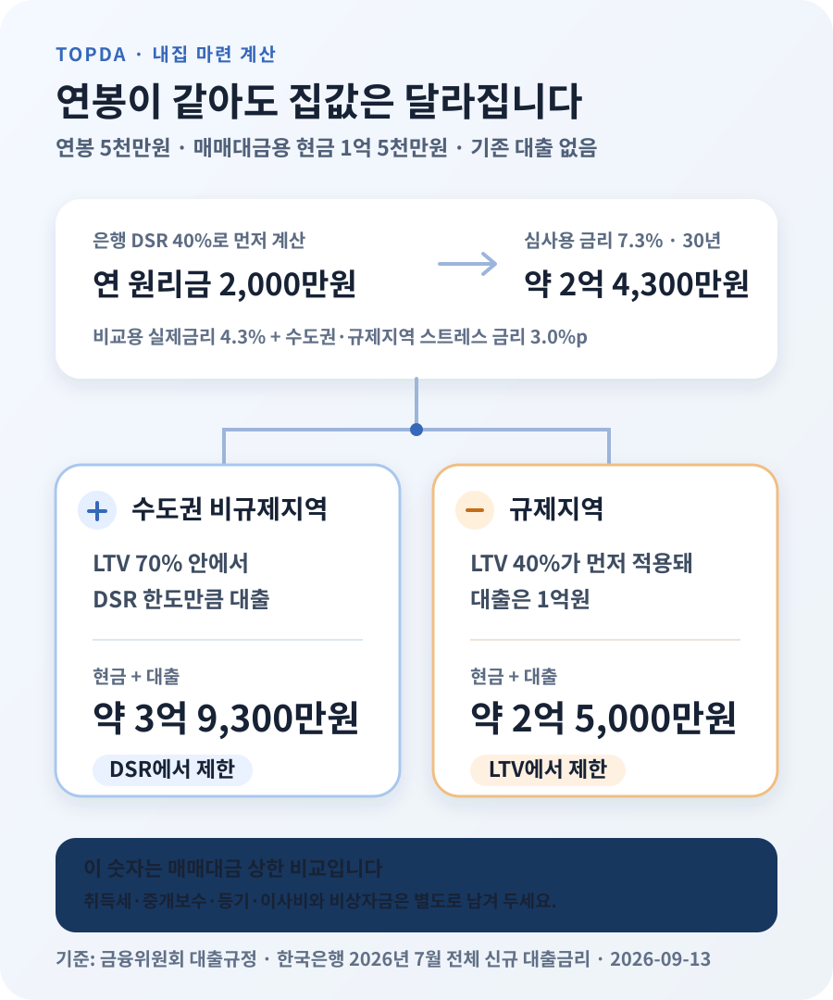

연봉 5천만원이면 얼마짜리 아파트까지 살 수 있을까?

세전 연봉 5천만원, 기존 대출 없음, 30년 만기 변동금리 주담대를 가정하면 ‘소득에 비해 원리금을 얼마나 갚는지’ 보는 DSR 기준 대출한도는 약 2억 4,300만원으로 계산됩니다. 매매대금에 쓸 수 있는 현금이 1억 5천만원이면 수도권 비규제지역에서는 약 3억 9,300만원, 규제지역에서는 ‘집값에 비해 얼마를 빌리는지’ 보는 LTV 40%가 먼저 걸려 약 2억 5천만원짜리 집이 계산상 상한입니다. 취득세·중개보수·이사비는 뺀 금액이며, 이 숫자는 은행의 승인액도 ‘적정 집값’도 아닙니다.
연봉 5천만원이면 대출한도부터 약 2억 4,300만원입니다
집을 알아볼 때 가장 먼저 궁금한 숫자는 “내 연봉으로 얼마까지 빌릴 수 있나”입니다. 여기서는 다른 빚이 없는 사람이 은행에서 30년 만기 원리금균등상환 변동금리 주택담보대출을 받는 경우를 계산했습니다. 연봉은 세후 월급이 아니라 금융회사가 인정하는 연소득 5천만원입니다.
은행권 차주단위 DSR의 기본 규제선은 40%입니다. 쉽게 말해 심사에 잡히는 모든 대출의 1년 원리금이 연소득의 40%를 넘지 않아야 한다는 뜻입니다. 연봉 5천만원이면 1년에 2천만원, 한 달 평균 약 166만 7천원이 심사용 상환 한도입니다.
이 2,000만원은 생활비를 뺀 여윳돈이 아니라 대출 심사에 쓰는 연간 원리금 한도입니다.
그렇다고 월 166만 7천원을 현재 대출금리로 나눠 바로 한도를 정하지는 않습니다. 수도권·규제지역의 변동금리 주담대는 실제 금리에 스트레스 금리 하한 3.0%포인트를 더해 DSR을 계산합니다. 스트레스 금리는 실제 이자에 붙는 돈이 아니라, 금리가 올라도 갚을 수 있는지 보기 위해 한도를 줄이는 심사용 금리입니다.
한국은행이 2026년 8월 26일 발표한 7월 예금은행 신규취급액 기준 전체 대출금리는 연 4.27%였습니다. 주담대 상품금리와 같은 통계는 아니므로 이 글에서는 비교를 위해 4.3%로 둥글게 잡았습니다. 여기에 3.0%포인트를 더한 연 7.3%, 30년 원리금균등상환으로 계산하면 대출원금이 약 2억 4,300만원입니다. 실제 신청 때는 본인이 받은 상품금리와 고정·혼합·주기·변동형 구분을 넣어 다시 계산해야 합니다.
같은 조건이라면 연봉 1천만원당 한도가 약 4,900만원씩 달라집니다
아래 표는 연소득만 바꾸고 나머지 조건은 똑같이 둔 비교입니다. 기존 대출이 전혀 없고, 은행권 DSR 40%, 심사용 금리 7.3%, 30년 원리금균등상환을 가정했습니다. 만원 단위 계산값을 백만원 단위에서 반올림했기 때문에 실제 심사액과는 다릅니다.
| 세전 연소득 | DSR상 연 원리금 한도 | 계산상 주담대 한도 |
|---|---|---|
| 4,000만원 | 1,600만원 | 약 1억 9,400만원 |
| 5,000만원 | 2,000만원 | 약 2억 4,300만원 |
| 6,000만원 | 2,400만원 | 약 2억 9,200만원 |
| 7,000만원 | 2,800만원 | 약 3억 4,000만원 |
| 8,000만원 | 3,200만원 | 약 3억 8,900만원 |
| 1억원 | 4,000만원 | 약 4억 8,600만원 |
이 표만 보고 집값을 정하면 안 됩니다. DSR은 ‘소득으로 갚을 수 있는 대출’만 계산합니다. 집값에는 내가 이미 모은 돈이 더해지고, 지역과 주택 수에 따른 LTV가 다시 한도를 막습니다. 15억원 이하 수도권·규제지역 주택은 구입 목적 주담대 절대 한도 6억원도 적용되지만, 연봉 5천만원 사례에서는 DSR 계산값이 더 작아 이 상한까지 닿지 않습니다.
현금 1억 5천만원이 있으면 수도권 비규제지역에서 약 3억 9,300만원입니다
이제 매매대금에 넣을 수 있는 현금을 더해 보겠습니다. 예금잔액이 아니라 취득세·중개보수·법무비·이사비와 비상자금을 따로 남긴 뒤, 집값에 실제로 투입할 현금이 1억 5천만원이라고 가정합니다.
수도권 비규제지역에서 일반 무주택자의 LTV가 70%라고 해도 집값의 70%를 항상 빌릴 수 있다는 뜻은 아닙니다. DSR 한도가 약 2억 4,300만원이므로 현금과 합한 매매대금은 약 3억 9,300만원입니다. 이 가격에서 대출 비율은 약 62%라 LTV 70% 안에 들어옵니다.
- 매매대금에 쓸 현금: 1억 5,000만원
- DSR로 계산한 대출한도: 약 2억 4,300만원
- 계산상 집값 상한: 약 3억 9,300만원
- 별도로 남겨 둘 돈: 취득세·중개보수·등기비용·수리비·이사비·비상자금
금융회사가 인정하는 담보가치가 매매가보다 낮으면 LTV 한도도 다시 내려갑니다. 계약서에 3억 9,300만원이라고 적혀 있다는 이유만으로 그 가격 전체가 담보가치로 인정되는 것은 아닙니다. 시세가 없거나 거래가 드문 주택은 감정가를 어떻게 잡는지 계약 전에 은행에 확인해야 합니다.

같은 현금이어도 규제지역에서는 약 2억 5천만원으로 줄어듭니다
규제지역의 일반적인 주담대 LTV는 40%입니다. 집값의 60%를 현금으로 내야 한다는 뜻이므로, 현금 1억 5천만원을 집값에 모두 넣을 수 있다면 계산상 집값은 2억 5천만원입니다. 대출은 나머지 40%인 1억원입니다. DSR로는 2억 4,300만원까지 가능해 보여도 LTV가 더 낮아 1억원에서 막힙니다.
| 같은 사람·같은 현금 | 수도권 비규제지역 | 규제지역 |
|---|---|---|
| 세전 연소득 | 5,000만원 | 5,000만원 |
| 매매대금에 쓸 현금 | 1억 5,000만원 | 1억 5,000만원 |
| 기본 LTV | 70% | 40% |
| 계산상 대출 | 약 2억 4,300만원 | 1억원 |
| 계산상 집값 상한 | 약 3억 9,300만원 | 약 2억 5,000만원 |
| 먼저 걸린 기준 | DSR | LTV |
생애최초 구입자, 정책대출 이용자, 주택 보유자, 처분조건부 1주택자 등은 적용 규칙이 달라질 수 있습니다. ‘내가 무주택이니 표와 똑같다’고 단정하지 말고 주택 소재지, 보유 주택 수, 대출 목적과 경과규정을 은행에 함께 알려야 합니다.
은행이 빌려준다는 금액과 내가 감당할 금액은 다릅니다
스트레스 DSR 7.3%로 약 2억 4,300만원을 계산했지만 실제 납부액은 실제 대출금리로 정합니다. 연 4.3%, 30년 원리금균등상환이라면 2억 4,300만원의 첫 달부터 같은 월 상환액은 약 120만원입니다. 규제지역 사례의 1억원 대출은 약 49만 5천원입니다. 변동금리라면 이후 금리 변경에 따라 납부액도 달라집니다.
월 120만원을 낼 수 있는지는 DSR 표가 대신 정해주지 않습니다. 같은 연봉 5천만원이어도 한 사람은 부모님과 살며 주거비가 적고, 다른 사람은 자녀 돌봄비·자동차 할부·부모 부양비를 내고 있을 수 있습니다. 은행의 40%는 규제선이지 가계에 안전한 소비 기준이 아닙니다.
먼저 통장에 실제로 들어오는 월소득에서 생활비, 보험료, 교육·돌봄비, 차량비, 정기저축과 비상자금 적립액을 빼고 매달 흔들림 없이 낼 수 있는 주거비를 적어 보세요. 예를 들어 원리금에 월 100만원까지만 쓰겠다고 정하면 연 4.3%, 30년 기준 대출원금은 약 2억 200만원입니다. 은행 계산상 한도보다 약 4,100만원 낮습니다. 이 차이가 바로 ‘받을 수 있는 대출’과 ‘내가 선택한 대출’의 차이입니다.
부부 연봉은 공동명의만으로 자동 합산되지 않습니다
맞벌이라면 부부 소득을 더해 더 큰 집을 떠올리기 쉽습니다. 그러나 등기를 공동명의로 한다는 사실만으로 대출 심사 소득이 자동 합산되지는 않습니다. 배우자가 공동차주가 되는지, 어느 소득자료를 금융회사가 인정하는지, 배우자의 기존 대출까지 어떻게 반영하는지를 함께 봅니다.
둘의 소득을 합치면 DSR의 분모가 커질 수 있지만 배우자의 신용대출·자동차 할부 같은 원리금도 함께 들어올 수 있습니다. 혼자 신청할 때와 공동차주로 신청할 때의 한도를 은행에 각각 받아 비교하세요. 소득을 합치는 대신 두 사람 모두 채무를 부담하게 된다는 점도 계약 전에 확인해야 합니다.
신용대출과 마이너스통장이 있으면 표보다 줄어듭니다
위 계산은 기존 대출이 0원이라는 조건입니다. 실제 DSR에는 주담대뿐 아니라 규정상 포함되는 신용대출, 자동차 할부, 카드론 등의 연 원리금이 먼저 자리를 차지합니다. 특히 마이너스통장은 지금 꺼내 쓴 금액이 아니라 약정한도가 심사에 반영될 수 있어, 쓰지 않는 한도도 확인해야 합니다.
기존 대출의 월 납부액을 단순히 12배 해 빼면 정확하지 않을 수 있습니다. 대출 종류마다 DSR에서 원금을 나누는 산정만기가 다르고, 전세대출·정책금융처럼 포함 범위가 다른 상품도 있기 때문입니다. 대출 잔액, 약정한도, 금리, 만기와 상환방식을 모두 준비해 금융회사 산식으로 다시 받아야 합니다.
규정상 LTV와 DSR을 통과해도 실제 승인이 보장되지는 않습니다. 금융위원회는 2026년 금융권 가계대출 증가율을 1.5% 이내로 관리하겠다고 밝혔습니다. 금융회사별 총량, 내부 신용평가, 담보평가와 취급 시점에 따라 한도나 금리가 달라질 수 있으므로 매매계약 전에는 한 곳의 앱 조회 결과만 믿지 않는 편이 안전합니다.
내 상황은 이 순서로 다시 계산하면 됩니다
- 집값에 쓸 현금부터 분리합니다. 취득세·중개보수·등기·이사·수리비와 비상자금을 남기고 실제 매매대금에 넣을 금액만 적습니다.
- 기존 빚을 빠짐없이 모읍니다. 신용대출 잔액, 마이너스통장 약정한도, 자동차 할부, 카드론과 배우자 합산 여부를 확인합니다.
- 주소와 보유 주택 수를 말하고 사전 상담합니다. 규제지역 여부, LTV, 주택가격별 절대 한도, 생애최초·정책대출 가능성을 은행 2~3곳에서 비교합니다.
- 은행 한도와 별도로 월 상환 상한을 정합니다. 실제 세후소득과 고정지출을 넣고, 금리가 1%포인트 올라도 유지할 수 있는지 계산합니다.
- 더 낮은 금액으로 매물 가격대를 잡습니다. ‘현금+은행 한도’와 ‘현금+내가 감당할 대출’ 중 작은 쪽을 쓰고 부대비용은 더하지 않습니다.
- 계약 직전에 다시 조회합니다. 담보가치, 금리와 금융회사 총량은 바뀔 수 있으므로 예상 한도와 승인 완료를 구분합니다.
연봉별 표는 출발점으로는 쓸 만하지만 결론은 아닙니다. 연봉 5천만원이라는 한 숫자보다 매매대금에 넣을 현금, 실제 월 상환 여력, 집이 있는 지역을 같이 놓아야 내가 볼 매물 가격대가 나옵니다.
공식 자료와 계산 기준
- 금융위원회 — 주택시장 안정화를 위한 대출수요 관리 방안 FAQ (규제지역 LTV와 주택가격별 주담대 상한)
- 금융위원회 — 3단계 스트레스 DSR 시행방안 (시행일과 금리유형별 적용 구조)
- 금융위원회 — 2026년 가계부채 관리방안 (금융권 가계대출 증가율 관리 목표)
- 금융위원회 — 2026년 7월 규제지역 지정 관련 금융조치 (규제지역 LTV 40%)
- 한국은행 — 2026년 7월 금융기관 가중평균금리 (예금은행 신규취급액 기준 전체 대출금리 4.27%)
- 톺다 — 주택담보대출 한도 계산기 (지역·주택가격·소득·기존 대출을 넣어 재계산)
정보 기준일: 2026-09-13. 예시는 은행권 DSR 40%, 기존 대출 없음, 30년 원리금균등상환 변동금리 주담대, 비교용 실제금리 4.3%, 수도권·규제지역 스트레스 금리 3.0%포인트를 가정했습니다. 한국은행의 4.27%는 전체 신규 대출 평균이므로 개별 주담대 상품금리가 아닙니다. 금리유형·지역·보유 주택 수·담보평가·소득 인정·금융회사 총량에 따라 실제 결과는 달라집니다. 이 글은 특정 가격의 주택 매수를 권유하거나 대출 승인을 보장하지 않습니다.
내 조건을 넣어 다시 계산할 때
- 주택담보대출 한도 계산기지역·집값·소득·기존 대출을 함께 반영
- DSR 한도 계산기기존 부채를 포함한 소득 대비 상환액 확인
- 대출 상환방식 비교월 상환액과 총이자를 만기별로 비교